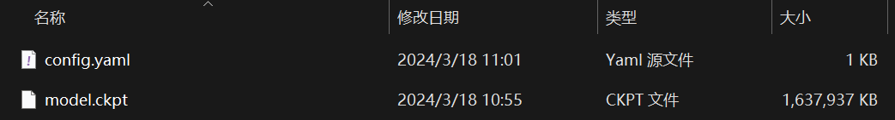
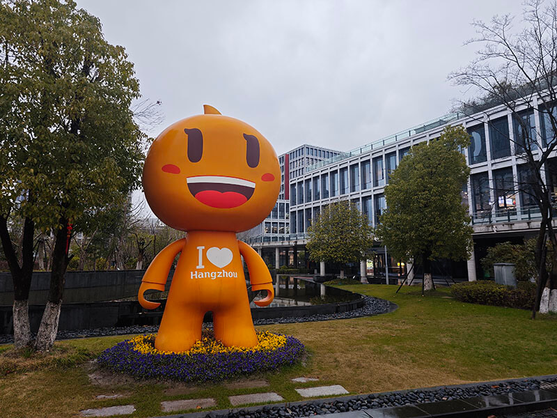
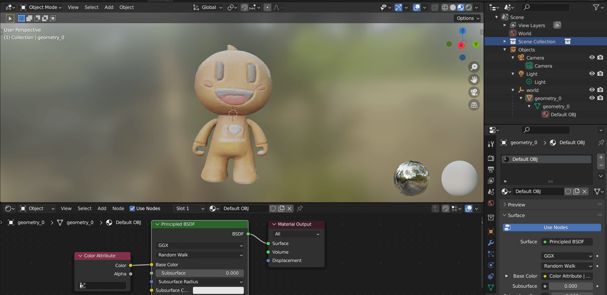

资源
-
Arxiv: [2403.02151] TripoSR: Fast 3D Object Reconstruction from a Single Image (arxiv.org)
-
Hugging Face: stabilityai/TripoSR · Hugging Face
-
PaperWithCode: TripoSR: Fast 3D Object Reconstruction from a Single Image | Papers With Code
-
官网：Introducing TripoSR: Fast 3D Object Generation from Single Images — Stability AI
全文
Abatract
TripoSR 是一个使用 transformer 进行快速 Feed-forward 3D 生成的 3D 重建模型。在 LRM 网络架构（ICLR 2024 Oral | Adobe 提出 LRM：单个图像到 3D 的大型重建模型 - 知乎 (zhihu.com)）的基础上，TripoSR 集成了数据处理、模型设计和训练技术方面的实质性改进。
1. Introduction
近期三维重建获得数据的办法：利用 2D 扩散模型从文本提示或输入图像创建 3D 资产。（利用 2D 先验进行 3D 生成）但是效率低。
Feed-forward 3D 重建模型实现了显著更高的计算效率。沿着这个方向，最近的几种方法在不同的 3D 数据集上的可扩展训练中显示出了前景。
2. TripoSR: Data and Model Improvements
TripoSR 的设计基于 LRM，在数据管理、模型和训练策略方面取得了一系列技术进步。现在，我们对模型进行概述，然后进行技术改进。
2.1. Model Overview
TripoSR 的核心包括以下组件：
- 图像编码器（image encoder）
- 使用预先训练的视觉变换器模型 DINOv1 进行初始化，该模型将 RGB 图像投影到一组潜在向量中。这些矢量对图像的全局和局部特征进行编码，并包括重建 3D 对象所需的信息。
- 图像到三平面解码器（image-to-triplane decoder）
- 将潜在矢量变换到三平面 NeRF 表示上。
- 基于三平面的神经辐射场（an image-to-triplane decoder, NeRF）。
- NeRF 模型由一堆多层感知器（MLP）组成，这些感知器负责预测空间中 3D 点的颜色和密度。
2.2. Data Improvements
- 数据整理：通过选择一个精心策划的 Objaverse 数据集子集，该子集在 CC-By 许可证下可用，我们提高了训练数据的质量。
- 数据渲染：我们采用了一系列不同的数据渲染技术，这些技术更接近于模拟真实世界图像的分布，从而增强了模型的泛化能力，即使是在专门使用 Objaverse 数据集进行训练的情况下也是如此。
2.3. Model and Training Improvements
-
三平面通道优化
-
Mask Loss
- 在训练过程中引入了 Mask Loss，显著减少了“漂浮物”伪影，并提高了重建的保真度
-
Local Rendering Supervision.
3. Results
评估数据集。我们策划了两个公共数据集，GSO 和 OmniObject3D，用于评估。我们发现，这两个数据集都包括许多简单形状的对象（例如，长方体、球体或圆柱体），因此可能导致对这些简单形状的高度验证偏差。因此，我们手动过滤数据集，并从每个数据集中选择大约 300 个对象，以确保它们形成一个多样且具有代表性的公共对象集合。
三维形状度量。我们使用 Marching Cubes 提取等值面，将隐式 3D 表示（如 NeRF）转换为网格。我们从这些曲面中采样 10K 个点，以计算倒角距离（CD）和 Fscore（FS）。考虑到一些方法无法预测以视图为中心的形状，我们使用蛮力搜索方法将预测与地面实况形状对齐。
定量比较。我们将 TripoSR 与使用前馈技术的现有最先进的 3D 重建基线进行了比较，包括 One-2-345、三平面高斯（TGS）、ZeroShape 和 OpenLRM。
性能与运行时。TripoSR 的另一个关键优势是它的推理速度。在 NVIDIA A100 GPU 上从单个图像生成 3D 网格大约需要 0.5 秒。
4. Conclusion
我们希望 TripoSR 能够帮助研究人员和开发人员开发更先进的 3D 生成人工智能模型。
开跑
可以到 TripoSR - a Hugging Face Space by stabilityai 在线玩，也可以尝试离线部署。
从 VAST-AI-研究/TripoSR (github.com) 获取代码仓库。
整一个虚拟环境：
1 | |
装好 pytorch 后，在代码仓库里装好库：
1 | |
看一下 run.py 里的 argparse：
| 参数 | 解释 |
|---|---|
| image | 接受一个或多个字符串作为输入，表示输入图像的路径。 |
| –device | 指定要使用的设备，如果没有找到兼容 CUDA 的设备，则会回退到使用 CPU。默认为 ‘cuda:0’。 |
| –pretrained-model-name-or-path | 指定预训练模型的路径或名称，可以是 huggingface 模型 id 或本地路径。默认为 ‘stabilityai/TripoSR’。 |
| –chunk-size | 表示用于表面提取和渲染的评估块大小。较小的块大小会减少 VRAM 使用量，但会增加计算时间。设置为 0 表示不分块。默认为 8192。 |
| –mc-resolution | Marching cubes 网格的分辨率。默认为 256。 |
| –no-remove-bg | 如果指定此选项，则不会自动从输入图像中移除背景，输入图像应为带有灰色背景和正确尺寸前景的 RGB 图像。默认为 false。 |
| –foreground-ratio | 前景大小与图像大小的比例。仅在未指定 --no-remove-bg 时使用。默认为 0.85。 |
| –output-dir | 保存结果的输出目录。默认为 ‘output/’。 |
| –model-save-format | 保存提取的网格的格式，可选项为 'obj’或 ‘glb’。默认为 ‘obj’。 |
| –render | 如果指定此选项，则保存一个 NeRF 渲染的视频。默认为 false。 |
由于墙内下载 huggingface 的模型容易失败，改为采用离线加载模型的形式。修改 run.py 里的内容：
1 | |
从 stabilityai/TripoSR at main (huggingface.co) 下载 config.yaml 和 model.ckpt 到 models/ 下：

准备一张模型图片，就决定是你了！淘宝吉祥物！

开跑！
1 | |
emmm 还是下了一个叫 'https://github.com/danielgatis/rembg/releases/download/v0.0.0/u2net.onnx' 的东西，还好没被墙。
1 | |
这个程序会自动帮你抠图：
不过抠得不是很好，导致生成的模型多了点背景信息。我们手动抠图再试一次：
用 Blender 打开这个模型，修复一下旋转。生成的模型显示不出纹理信息，按 stabilityai/TripoSR · It doesn’t save texture to the .obj? (huggingface.co) 所说，应该在 Blender 里设置一下材质（将 Color Attribute 节点连接到 Base Color 里，但好像有些模型还是不行……）：

顺便送这个模型一个 Decimate 减少一下面数再导出，真是太棒了！